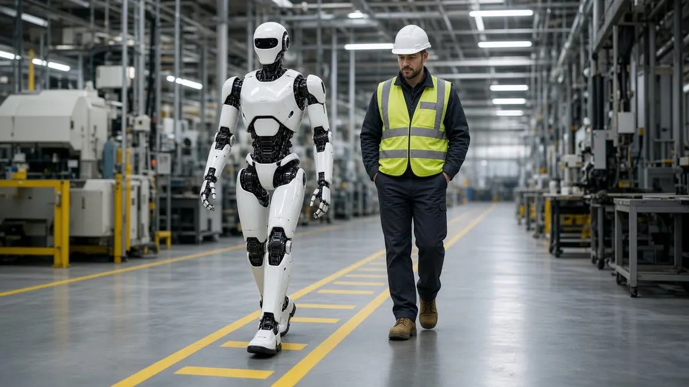

Policy
South Korea grants safety-rule exemption for 20 Robros humanoids in factory pilot
Short answer: A South Korean regulatory-sandbox committee has granted the robot maker Robros an exemption from safety rules written for stationary industrial robots, so that 20 of its bipedal humanoid robots can work in spaces shared with or next to people at four companies' sites, Seoul Economic Daily reported on 14 October 2026.
The newspaper lists the sites as Nepes (semiconductors), Sungwoo Hitech (auto parts), HD Hyundai Samho (shipbuilding) and Delivery Lab (logistics). Tasks it names include removing contaminants from components, placing auto body parts, stacking scaffolding pieces and moving refrigerated packaging.

Before the exemption, the paper says, existing rules treated industrial robots as stationary equipment and required fences or other barriers between robots and human work areas. The exemption is conditional on risk assessments and safety measures, and data from the pilot is to inform future safety standards, according to the report.
Trade and Industry Minister Kim Jung-kwan was quoted as saying that "AI technology is advancing so fast that regulation struggles to keep up".